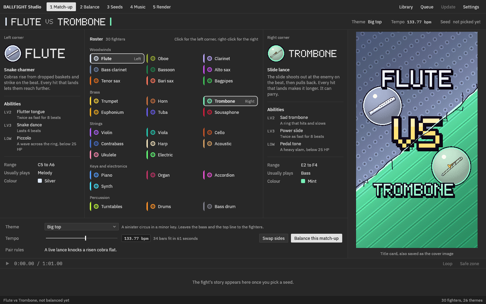
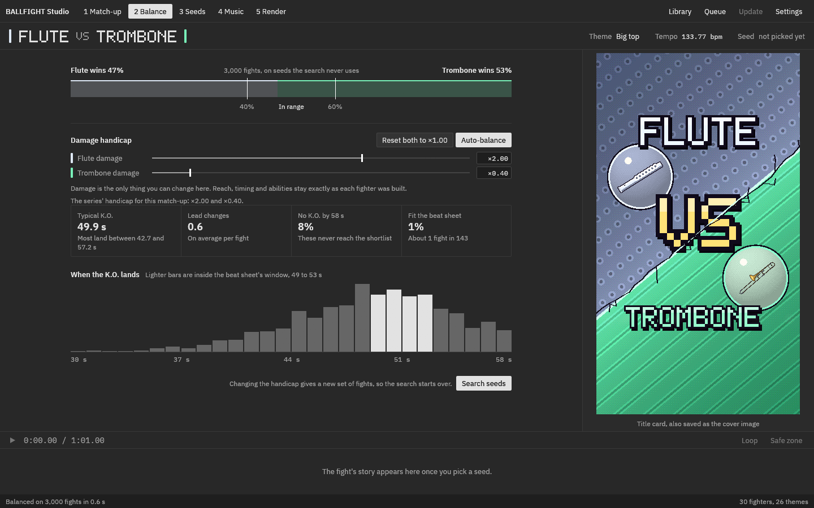
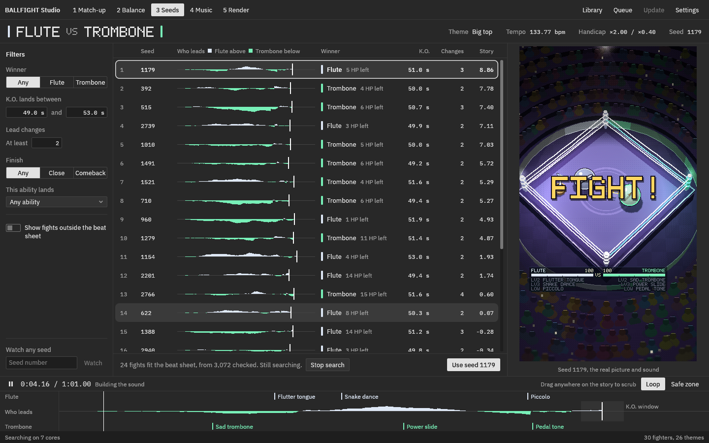
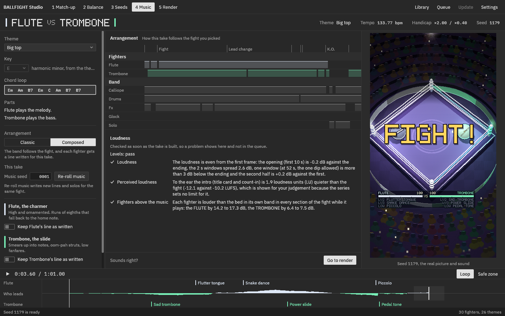
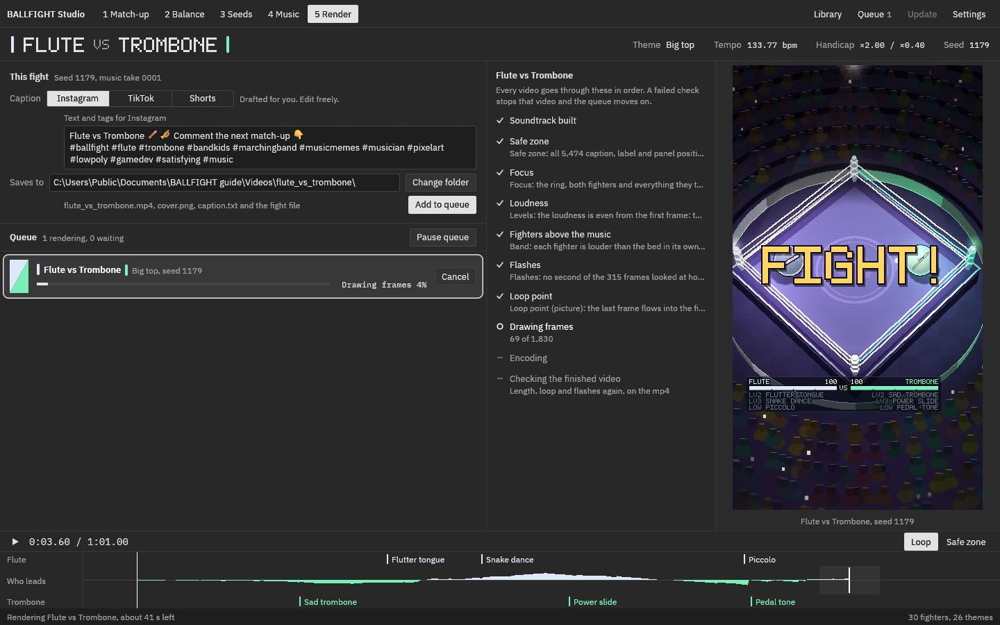
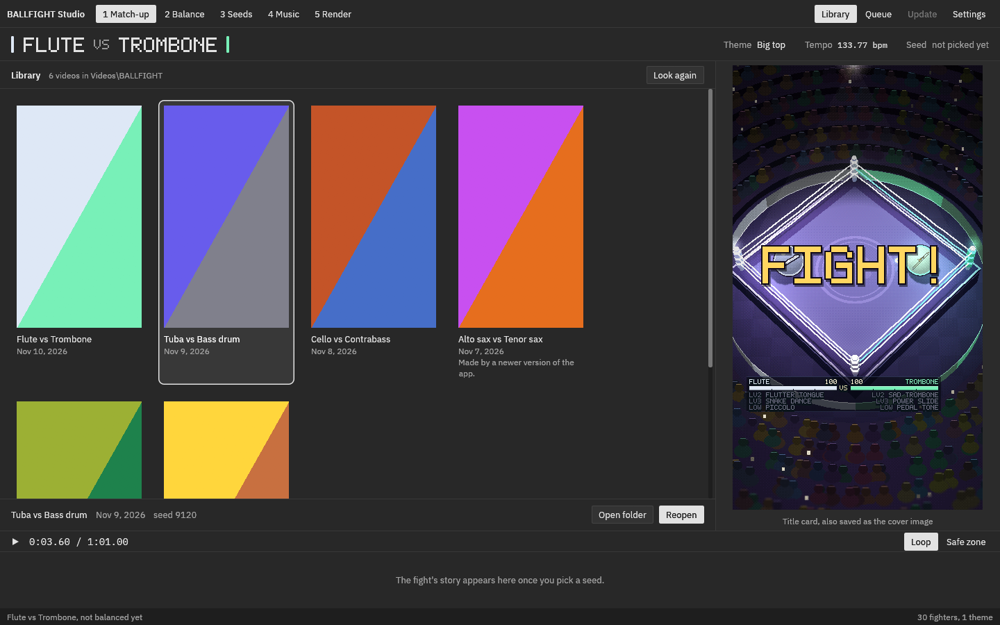
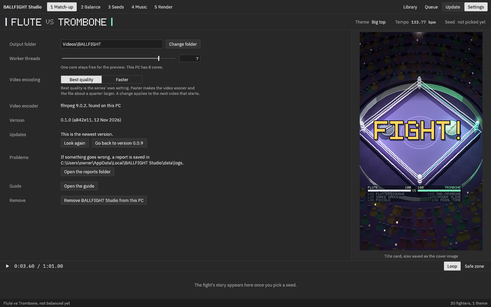
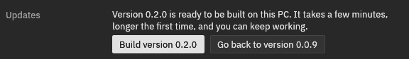
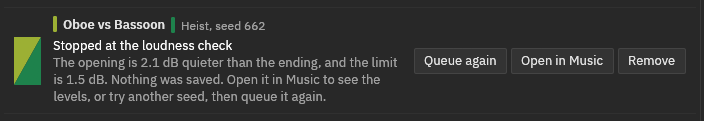

BALLFIGHT Studio guide
How to make a fight video, step by step. The five steps run left to right along the top of the window.
Starting the app
Double-click BALLFIGHT Studio on the desktop or in the Start menu. The window opens on Match-up. Only one copy opens at a time: starting it again brings the open window to the front.
The top bar holds the five steps, then Library, Queue and Settings. The stage in the middle plays the fight; the timeline under it shows where the K.O. lands. The status bar at the bottom says what the app is doing.
1 Match-up

Pick the two fighters. Click a fighter in the Roster to put it in the left corner, and right-click to put it in the right corner. The picture shows the guide's own match-up: Flute against Trombone.
- Swap sides trades the corners.
- Theme picks the music style and Tempo how fast it goes. Tempo changes the fight itself, so it lives here.
- Pair rules lists anything special these two do to each other.
When you are happy, press Balance this match-up.
2 Balance

The app fights the pair thousands of times to see who wins. The bar at the top shows each fighter's share of the wins. The aim is a fair fight: the marker should sit between 40% and 60%, under In range. Flute against Trombone already has the series' own handicap, so it starts in range.
- Auto-balance tries handicaps until the split is fair. Stop balancing ends it early.
- The Damage handicap sliders let you set it by hand. Reset both to ×1.00 starts again.
- When the K.O. lands shows the spread of finishing times.
Then press Search seeds.
3 Seeds

Every seed is a different fight between the same two fighters. The app searches thousands of them and keeps a shortlist of the ones that tell a good story: a comeback, lead changes and a late K.O. Click a row to watch it on the stage, and press play at the bottom left to watch it move.
- Filters narrow the shortlist: who wins, how many Lead changes, and when the K.O. lands.
- Stop search and Keep searching pause and carry on.
- Watch any seed plays a seed by its number.
When one looks right, press Use seed.
4 Music

This is the soundtrack of the chosen fight. You can listen to it on the stage while you change it.
- Arrangement has two choices. Classic plays each fighter's written line as it is. Composed writes fresh lines and solos that follow the fight. New match-ups start on Composed.
- Music seed is the number the composed music grows from. Re-roll music gives a new one: new lines and solos for the same fight, nothing else changes. On Classic these two are greyed out, because nothing is composed.
- Keep Flute's line as written (one tick for each fighter) keeps that fighter's written line and solo while the rest is composed. Use it when one part already sounds right.
- Chord loop changes the harmony. When both fighters can play bass, you can also pick who does.
Under the lanes, the levels line should read Levels: pass. If it fails, it says why and offers the next fight that fits. Then press Go to render.
5 Render

Here the fight becomes an mp4 with sound.
- Caption is drafted for you, one tab each for Instagram, TikTok and Shorts. Edit it freely; it is saved next to the video.
- Saves to shows the folder. Change folder picks another.
- Add to queue sends the video to the queue. You can carry on with the next fight while it renders.
On the right, the checks run one by one while the video is made: loudness, flashes, the loop point and more. A video is only saved when every check passes.
The queue
The queue is the list on the Render screen; Queue in the top bar takes you there. Videos render one at a time, top first.
- Pause queue holds the line after the current video; the same button then carries on.
- Cancel stops a video that is rendering. Nothing of it is saved.
- Drag a waiting video up or down to change the order. Right-click a waiting video to move it up, down or to the front.
- Open folder shows a finished video in its folder.
The queue survives closing the app. A video that was rendering when the app closed waits to start again.
The Library

Every video in your output folder, newest first. Pick one, then Reopen to bring its fight back into the five steps (to make a new version), or Open folder to see its files. Each video's folder holds the mp4, its cover picture, its caption and its fight file.
Settings

- Output folder: where videos are saved.
- Worker threads: how much of the PC the app uses. Fewer leaves more room for other programs while a video renders.
- Video encoding: Best quality or Faster. It applies to the next video that starts.
- Problems: where fault reports are kept. Open the reports folder shows them.
- Guide: Open the guide opens this page.
Updating

The app looks for a newer version by itself. When one is there, the Update button appears in the top bar and the Updates row in Settings says so.
- Press Build version (it names the new version). The app builds it while you keep working. Stop building cancels.
- When it is ready, press Restart now. The app closes and opens again on the new version. Your settings, queue and videos stay as they were.
- If the new version is worse, press Go back (it names the earlier version) to return to it.
When something goes wrong

- A stopped video. The row names the check that stopped it, gives the numbers, and says what to try, as in Stopped at the loudness check above. Nothing was saved. Press Open in Music to fix it, or try another seed, then Queue again.
- ffmpeg missing. ffmpeg is the part that writes the mp4, and it comes with the app. If the Video encoder line in Settings says ffmpeg was not found, videos cannot be saved. Ask for the app to be installed again.
- The output folder cannot be used. Render and the Library say so. Press Change folder to pick another, or create the missing one with the button beside it.
- The app closes on its own. It writes a fault report first and tells you where it is. Settings, Open the reports folder, shows them. Send the newest report along when you ask for help.
- Who to ask. For new fighters, new themes, new features or a problem these steps do not fix, start a new build session and describe what you want or what happened.
Removing the app
In Settings, press Remove BALLFIGHT Studio from this PC. The app first lists exactly what it would remove and asks; Keep it changes nothing, Remove the app goes ahead.
What goes: the program and its Start menu and desktop shortcuts. What stays: your settings, the queue, fault reports and logs, and your videos. They are kept in folders of their own.